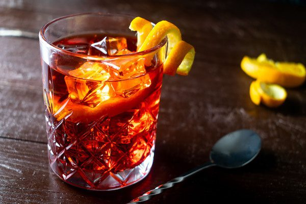

Historia Coctel, Margarita

En Puebla se dice que el gerente del Hotel Crespo, Danny Negrete, creó la bebida para su novia. Como ella adoraba la sal, él decidió escarchar una copa y combinar los ingredientes mágicos jugo de limón, tequila y triple sec. Entonces, nació la que según la leyenda fue la primera margarita. En Rosarito, se cree que la bebida comenzó a servirse como resultado de la petición de Marjorie King. Esta corista, al ser alérgica a casi todos los cócteles excepto el tequila, le pidió al dueño del bar La Gloria que creara un cóctel especial para ella. Entonces, mezclando los 3 famosos ingredientes, Danny Herrera creó la deliciosa margarita.
Historia Coctel, Sol y Sombra
Puede decirse que el sol y sombra representa la tradición en los bares de España. Es el contrapunto a los modernos gin tonic,que a veces parecen ensaladas flotantes. El sol y sombra no es un combinado que se pueda pedir en una discoteca o en un bar de moda sin que te miren con cara de póker. Es una bebida de bar, tasca, taberna, cantina o como se quiera llamar. Suele ser un digestivo para quien gusta de la mesa tradicional de potaje, mojar con pan y vino de la casa, lejos de comidas macrobióticas y tortillas deconstruidas.